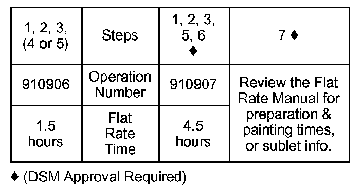

Paint - Damage Due To Acid Rain
88-021June 5, 1989
Paint Damage Due To Acid Rain
(Supersedes 88-021, dated December 12, 1988)
SYMPTOM
Careful visual examination of a paint surface that has been washed, rinsed thoroughly, and dried reveals "waterspots" and/or spots of discoloration in the paint.
Refer to Service Bulletin 88-036 for the inspection procedure.
PROBABLE CAUSE
The paint surface has been etched by rainwater made acidic or alkaline by atmospheric impurities. The extent of the damage can vary greatly, depending on how long the impurities have sat on the surface. In very severe cases, the base coat is damaged, requiring repainting.
PREVENTION
The shipping wax applied at the factory provides the best protection against damage by acid rain and industrial fallout. It is strongly recommended that the shipping wax be left on the car as long as possible. The dealership is responsible for maintaining the car's finish after this wax is removed. During the high heat and humidity periods of the year, the car must be rinsed off (with water only) after every exposure to rainfall.
CORRECTIVE ACTION
Select a small area of the paint surface that has suffered obvious acid rain damage. Perform the steps under DIAGNOSIS on this area. After each step, inspect to determine if all traces of the damage are removed. Note which step repairs the damage. Repair the rest of the damaged areas using the same set of steps. Glaze and wax the car after completing the repairs.
NOTE: Each of the steps in the diagnostic procedure removes a small layer of the paint finish, reducing its durability. It is very important to perform the steps in order, inspect the surface often, and stop when it is repaired.
DIAGNOSIS
1. Clean the area with a wax and grease remover.
2. Add one tablespoon of baking soda to a quart of water. Wash the area with this solution and rinse thoroughly. Inspect and continue if necessary.
3. Hand-polish the test area, using one of the polishing systems listed under RECOMMENDED MATERIALS. Follow the manufacturer's instructions with the selected system. (Do not use the included sanding materials at this time.) Inspect and continue if necessary.
4. Following the instructions supplied with the selected system, polish the test area using an electric buffer and polishing pad. Inspect the surface frequently to see if the acid rain damage has been removed. The goal is to remove the minimum amount of finish necessary to cure the problem.
CAUTION: Check the buffing pad and surface frequently to avoid wearing through the finish.
- Clear-coated paints should deposit no body color on the pad. If the body color starts to appear on the pad, stop immediately and examine your work. This is an indication that the clear coat has been worn completely away in some areas, and the color coat is no longer protected.
- Some non-metallic paints are protected by a clear coat combined with some body color. In this case, the buffing pad will show some body color immediately. If this clear/color coat is buffed through, there will be a dramatic change in the color intensity on the buffing pad.
- Check the appropriate Paint Codes Service Bulletin to determine if a paint finish is clear-coated or clear/color-coated.
NOTE: Approximately 95% of all cars damaged by acid rain should be repaired by steps 1 through 4. More severe damage will require you to go on to step 5.
5. Apply a rubbing compound, using an electric buffer and buffing pad. Follow this with an application of machine glaze, applied with the electric buffer and polishing pad. Inspect and continue if necessary.
NOTE: DSM approval is required before going on to Step 6 if this is a warranty repair.
6. Wet-sand the area with #1500 or #2000 sandpaper, then use the polishing compound from the selected Finesse system with an electric buffer to polish out the scratches. If damage remains visible, repeat this process using #1200 sandpaper. If damage is still evident, a #1000 sandpaper may be used. Do not use a sandpaper coarser than #1000, or you will leave scratches that cannot be removed with polishing compound.
NOTE: DSM approval is required before going on to Step 7 if this is a warranty repair.
7. Before repainting, wet-sand the surface with #600 sandpaper until all traces of acid rain damage are removed.
RECOMMENDED MATERIALS
Step 3:
3M Finesse-it II Finishing Material (3M P/N 05928)
Meguiar's Finesse Polishing System
Step 4:
3M Superbuff Polishing Pad P/N 05705
Step 5:
3M Super Duty Rubbing Compound P/N 05955
3M Super Buff 2+2 Pad P/N 05701
3M Imperial Machine Glaze P/N 05991
3M Superbuff Polishing Pad P/N 05705
Step 6: 3M Imperial Wetordry Color Sanding Paper:
#1000 P/N 02021
#1200 P/N 02022
#1500 P/N 02023
# 2000 P/N 02044
WARRANTY CLAIM INFORMATION
American Honda will reimburse for this repair only under the following conditions:
- It is done during PDI.
- No more than 30 days have elapsed since the vehicle was received at the dealership (according to the date noted on the motor carriers bill of lading.

Failed P/N: PDI-PAINT
Defect code: 090
Contention code: A99
NOTE:
- Sublet paint repairs must use the failed part number and defect code listed in this bulletin.
- When submitting the claim on Acuralink, you must use PDI-PAINT as the Failed Part and enter the vehicle's date of receipt in the customer contention comment section. The claim will be rejected without this information.

Disclaimer